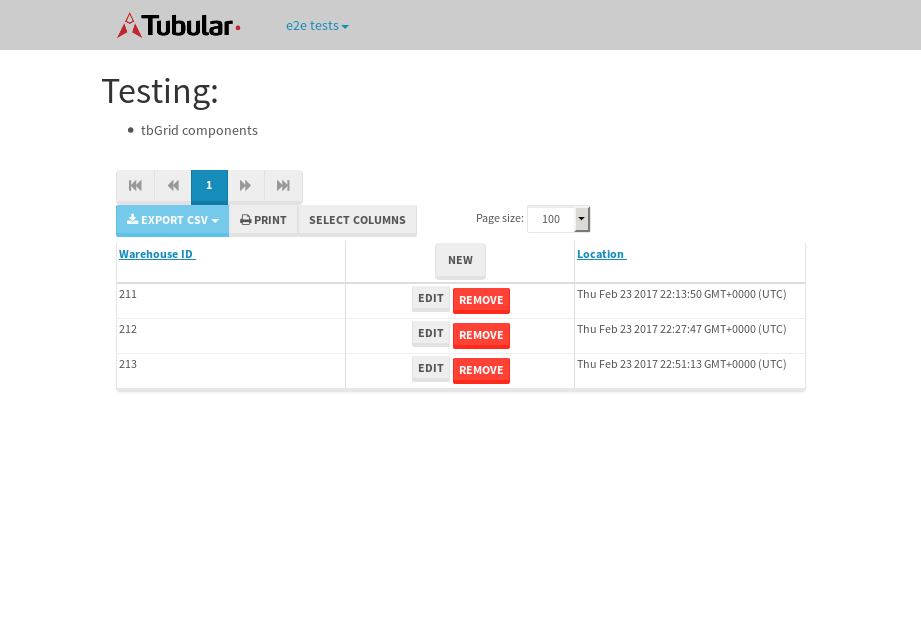

tbColumn.Grid Sorting - 26.913sTests: 5Skipped: 0Failures: 0 should sort data in ascending order then on descending order when sorting by Order Id column - 5.878sTests passed: 100.00%should order data in ascending order when click-sorting an unsorted text column - 5.023sTests passed: 100.00%should order data in descending order when click-sorting an ascending-sorted text column - 5.503sTests passed: 100.00%should order data in ascending order when click-sorting an unsorted date column - 5.302sTests passed: 100.00%should order data in descending order when click-sorting twice an unsorted date column - 5.205sTests passed: 100.00%
tbEmptyForm - 3.603sTests: 3Skipped: 0Failures: 0 should have an empty required field - 0.747sTests passed: 100.00%should not be able to click on save - 0.519sTests passed: 100.00%should load default value for numeric field - 0.52sTests passed: 100.00%
Tubular Filters.tbColumnFilter - 106.198sTests: 12Skipped: 0Failures: 0 should cancel filtering when clicking outside filter-popover - 8.755sTests passed: 100.00%should disable Value text-input for "None" filter - 6.936sTests passed: 100.00%should disable apply button for "None" filter - 7.196sTests passed: 100.00%should decorate popover button when showing data is being filtered for its column - 11.97sTests passed: 100.00%should correctly filter data for the "Equals" filtering option - 7.966sTests passed: 100.00%should correctly filter data for the "Not Equals" filtering option - 8.118sTests passed: 100.00%should correctly filter data for the "Contains" filtering option - 7.918sTests passed: 100.00%should correctly filter data for the "Not Contains" filtering option - 8.248sTests passed: 100.00%should correctly filter data for the "Starts With" filtering option - 7.214sTests passed: 100.00%should correctly filter data for the "Not Starts With" filtering option - 6.807sTests passed: 100.00%should correctly filter data for the "Ends With" filtering option - 6.778sTests passed: 100.00%should correctly filter data for the "Not Ends With" filtering option - 7.212sTests passed: 100.00%
Tubular Filters.tbColumnDateTimeFilter - 135.379sTests: 12Skipped: 0Failures: 0 should cancel filtering when clicking outside filter-popover - 7.265sTests passed: 100.00%should disable Value text-input for "None" filter - 6.641sTests passed: 100.00%should disable apply button for "None" filter - 6.868sTests passed: 100.00%should clear filtering when clicking on Clean button - 17.219sTests passed: 100.00%should decorate popover button when showing data is being filtered for its column - 11.636sTests passed: 100.00%should correctly filter data for the "Equals" filtering option - 6.815sTests passed: 100.00%should correctly filter data for the "Not Equals" filtering option - 7.107sTests passed: 100.00%should correctly filter data for the "Between" filtering option - 13.194sTests passed: 100.00%should correctly filter data for the "Greater-or-equal" filtering option - 12.175sTests passed: 100.00%should corretlly filter data for the "Greater" filtering option - 12.251sTests passed: 100.00%should correctly filter data for the "Less-or-equal" filtering option - 11.786sTests passed: 100.00%should correctly filter data for the "Less" filtering option - 11.683sTests passed: 100.00%
Tubular Filters.tbColumnOptionsFilter - 81.268sTests: 3Skipped: 0Failures: 0 should cancel filtering when clicking outside filter-popover - 8.18sTests passed: 100.00%should decorate popover button when showing data is being filtered for its column - 11.69sTests passed: 100.00%should filter column-elements in accordance to the selected filter when selecting a single option - 50.12sTests passed: 100.00%
Tubular Filters.tbTextSearch - 49.349sTests: 5Skipped: 0Failures: 0 min-chars is not set - 1.129sTests passed: 100.00%should filter data in searchable-column customer name to matching inputted text, starting from 3 characters - 7.036sTests passed: 100.00%should filter data in searchable-column shipper city to matching inputted text, starting from 3 characters - 11.879sTests passed: 100.00%should show clear button when there is inputted text only - 6.903sTests passed: 100.00%should clear filtering when clicking clear button - 16.743sTests passed: 100.00%
tbForm related components.tbCheckboxField - 6.658sTests: 2Skipped: 0Failures: 0 should save changes on "SAVE" - 3.011sTests passed: 100.00%should discard changes on "CANCEL" - 2.29sTests passed: 100.00%
tbForm related components.tbDropDownEditor - 11.941sTests: 5Skipped: 0Failures: 0 should set initial input value to the value of "value" attribute when defined - 1.717sTests passed: 100.00%should show the component name value in a label field when "showLabel" attribute is true - 2.415sTests passed: 100.00%should show a help field equal to this attribute, is present - 2.032sTests passed: 100.00%should submit modifications to item/server when clicking form "Save" - 2.859sTests passed: 100.00%should NOT submit modifications to item/server when clicking form "Cancel" - 2.365sTests passed: 100.00%
tbForm related components.tbTextArea - 17.06sTests: 7Skipped: 0Failures: 0 should set initial input value to the value of "value" attribute when defined - 1.885sTests passed: 100.00%should be invalidated when the number of chars is not in the range of "min" and "max" attributes - 3.154sTests passed: 100.00%should show the component name value in a label field when "showLabel" attribute is true - 1.846sTests passed: 100.00%should show a help field equal to this attribute, is present - 1.734sTests passed: 100.00%should require the field when the attribute "required" is true - 1.782sTests passed: 100.00%should submit modifications to item/server when clicking form "Save" - 2.934sTests passed: 100.00%should NOT submit modifications to item/server when clicking form "Cancel" - 3.072sTests passed: 100.00%
tbForm related components.tbDateEditor - 16.464sTests: 6Skipped: 0Failures: 0 should set initial date value to the value of "value" attribute when defined - 1.703sTests passed: 100.00%should be invalidated when the date is not in the range of "min" and "max" attributes - 2.281sTests passed: 100.00%should show the component name value in a label field when "showLabel" attribute is true - 2sTests passed: 100.00%should show a help field equal to this attribute, is present - 2.289sTests passed: 100.00%should submit modifications to item/server when clicking form "Save" - 4.887sTests passed: 100.00%should NOT submit modifications to item/server when clicking form "Cancel" - 2.523sTests passed: 100.00%
tbForm related components.tbTypeaheadEditor - 17.757sTests: 7Skipped: 0Failures: 0 should show an options list when there is an API-info/component entered-data - 2.352sTests passed: 100.00%should select the option clicked - 2.26sTests passed: 100.00%should show a "delete" button when an option/match is selected, and delete the option if button is clicked - 2.769sTests passed: 100.00%should show a label value equal to the component name when "showLabel" attribue is true - 1.804sTests passed: 100.00%should require a value when "require" attribute is true - 2.023sTests passed: 100.00%should submit modifications to item/server when clicking form "Save" - 2.788sTests passed: 100.00%should NOT submit modifications to item/server when clicking form "Cancel" - 2.505sTests passed: 100.00%
tbForm related components.tbSimpleEditor - 21.518sTests: 9Skipped: 0Failures: 0 should set initial input value to the value of "value" attribute when defined - 1.669sTests passed: 100.00%should be invalidated when the number of chars is not in the range of "min" and "max" attributes - 2.704sTests passed: 100.00%should show the component name value in a label field when "showLabel" attribute is true - 2.685sTests passed: 100.00%should set input placeholder to the value of "placeholder" attribute - 2.119sTests passed: 100.00%should validate the control using the "regex" attribute, if present - 1.811sTests passed: 100.00%should show a help field equal to this attribute, is present - 1.857sTests passed: 100.00%should require the field when the attribute "required" is true - 2.942sTests passed: 100.00%should submit modifications to item/server when clicking form "Save" - 3.002sTests passed: 100.00%should NOT submit modifications to item/server when clicking form "Cancel" - 2.019sTests passed: 100.00%
tbForm related components.tbNumericEditor - 17.649sTests: 7Skipped: 0Failures: 0 should set initial component value to the value of "value" attribute when defined - 2.123sTests passed: 100.00%should be invalidated when the entered number is not in the range of "min" and "max" attributes - 2.285sTests passed: 100.00%should show the component name value in a label field when "showLabel" attribute is true - 1.824sTests passed: 100.00%should show a help field equal to this attribute, is present - 2.017sTests passed: 100.00%should require the field when the attribute "required" is true - 2.991sTests passed: 100.00%should submit modifications to item/server when clicking form "Save" - 3.243sTests passed: 100.00%should NOT submit modifications to item/server when clicking form "Cancel" - 2.434sTests passed: 100.00%
tbForm Connection Error NoModelKey - 2.593sTests: 1Skipped: 0Failures: 0 tbForm connection error functionality - 0.467sTests passed: 100.00%
tbForm Connection Error NoServerUrl - 2.916sTests: 1Skipped: 0Failures: 0 tbForm connection error functionality - 0.528sTests passed: 100.00%
tbGridComponents - 9.513sTests: 6Skipped: 0Failures: 1 should add item with newRow method - 2.452sTests passed: 100.00%should add item with newRow method and cancel action - 1.696sTests passed: 100.00%should update item with tbSaveButton - 0.603sFailed: ElementNotVisibleError✗Tests passed: 0.00%should NOT update item on cancel Update action - 1.037sTests passed: 100.00%should remove item with tbRemoveButton - 1.309sTests passed: 100.00%should NOT remove item on cancel Remove action - 0.899sTests passed: 100.00%
tbGridPager.navigation buttons - 9.735sTests: 1Skipped: 0Failures: 0 should perform no action when clicking on the numbered navigation button corresponding to the current-showing results page - 1.724sTests passed: 100.00%
tbGridPager.navigation buttons.first/non-last results page related functionallity - 3.487sTests: 2Skipped: 0Failures: 0 should disable "first" and "previous" navigation buttons when in first results page - 1.574sTests passed: 100.00%should enable "last" and "next" navigation buttons when in a results page other than last - 1.913sTests passed: 100.00%
tbGridPager.navigation buttons.last/non-first results page related functionallity - 4.524sTests: 2Skipped: 0Failures: 0 should disable "last" and "next" navigation buttons when in last results page - 2.118sTests passed: 100.00%should enable "first" and "previous" navigation buttons when in a results page other than first - 2.406sTests passed: 100.00%
tbGridPager.page navigation - 8.537sTests: 5Skipped: 0Failures: 0 should go to next results page when clicking on next navigation button - 1.681sTests passed: 100.00%should go to previous results page when clicking on previous navigation button - 2.35sTests passed: 100.00%should go to last results page when clicking on last navigation button - 1.478sTests passed: 100.00%should go to first results page when clicking on first navigation button - 1.667sTests passed: 100.00%should go to corresponding results page when clicking on a numbered navigation button - 1.36sTests passed: 100.00%
tbGridPagerInfo - 4.372sTests: 2Skipped: 0Failures: 0 should show text in accordance to numbered of filter rows and current results-page - 1.386sTests passed: 100.00%should show count in footer - 0.73sTests passed: 100.00%
tbPageSizeSelctor - 11.055sTests: 4Skipped: 0Failures: 0 should filter up to 10 data rows per page when selecting a page size of "10" - 2.424sTests passed: 100.00%should filter up to 20 data rows per page when selecting a page size of "20" - 1.627sTests passed: 100.00%should filter up to 50 data rows per page when selecting a page size of "50" - 2.617sTests passed: 100.00%should filter up to 100 data rows per page when selecting a page size of "100" - 2.715sTests passed: 100.00%
tbRowSelectable - 10.327sTests: 2Skipped: 0Failures: 0 selected rows - 4.865sTests passed: 100.00%unselected rows - 3.42sTests passed: 100.00%
tbSingleForm - 18.437sTests: 8Skipped: 1Failures: 0 should load correct info - 0s***Skipped***Tests passed: 0%should change customer name - 2.371sTests passed: 100.00%should save it - 3.444sTests passed: 100.00%should clear the inputs - 2.414sTests passed: 100.00%should update - 2.682sTests passed: 100.00%should reset editor - 2.644sTests passed: 100.00%should not save if not Changes - 2.371sTests passed: 100.00%should not be able to click on save - 2.51sTests passed: 100.00%
{kind=link}